[CMU15445]:索引并发控制
Index Concurrency Control
DBMS通过使用并发控制协议来确保在对一个共享的对象上进行并发操作能够得到正确的结果
一个协议的正确性可以分为两种
逻辑正确性
一个线程应该能够获取到他期望获取到的值
物理正确性
这意味着在我们的数据结构中没有指针指向非法的内存区域
在数据库中，我们关心的仅仅是逻辑正确性
Lock & Latch
在之前已经介绍过Lock和Latch的区别，但只是宏观的讲了一下Lock位于事务层面，而Latch位于数据结构层面，接下来仔细分析一下他们之间的区别
| Lock | Latch | |
|---|---|---|
| 隔离级别 | 用户事务 | 线程 |
| 保护的内容 | 整个数据库 | 内存中的数据结构 |
| 持续时间 | 整个事务处理期间 | 某些关键点 |
| 死锁处理 | 检测恢复机制 | 手动避免 |
| 模式 | 共享锁，排它锁，Update, Intension | 读者锁，写者锁 |
| 存储位置 | Lock管理器 | 受保护的数据结构 |
Read Latch 和 Write Latch
下面是线程对锁的持有情况
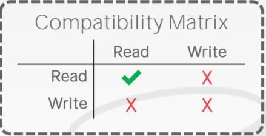
Read Latch
多个线程可以同时持有Read Latch
Write Latch
多个线程同时访问数据时，只有一个线程能拿到Write Latch, 如果一个线程想要拿到Write Latch, 只有等其他所有线程
释放他们所拥有的锁才行
Latch Implementations
实现锁的基本方法还是通过现代CPU提供的compare-and-swap指令，这个指令的伪代码如下
1 | |
如果原有值是我们所期望的值，那么就将它交换成新值，这个指令是原子的
下面介绍几种数据库中使用的Latch的实现方法
操作系统 mutex
使用操作系统内置的锁，如
std::mutex. 在这里简单介绍一下futex的概念futex
futex的全称是
fast user-space mutex，其基本思想是在进程的用户地址空间中开辟一个共享的内存区域，如一个bit,线程访问共享资源的时候，通过对该内存区域进行+1, -1等操作来模拟实现latch, 进而减少信号量的使用，因为使用信号量即意味着要进入内核空间，需要开销在数据库中，如果DBMS能够获得用户空间的latch, 那么就代表它获取到了共享资源，如果获取用户空间latch失败了，那么它就会尝试使用系统mutex, 如果再次失败，那么就会陷入阻塞
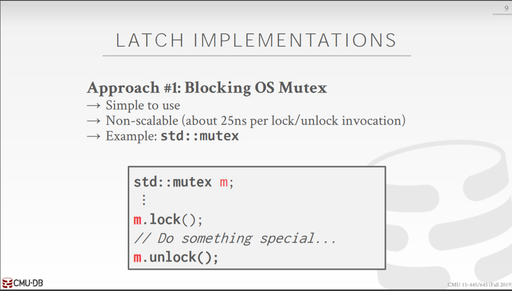
使用操作系统mutex不是一个好方法，因为锁的调度完全由操作系统来管理，不可控
Test-And-Set 自旋锁
该方法的思想与futex十分相似，也是在用户空间设置一个共享区域来模拟latch, 但是当线程尝试获取latch失败的时候，线程就会进行自旋或者是一些自定义的操作
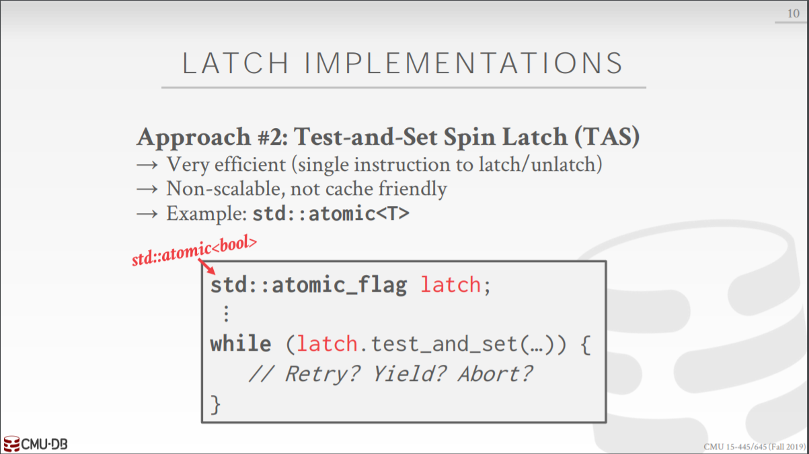
test-and-set的伪代码如下1
2
3
4
5int TestAndSet(int *ptr,int new){
int old=*ptr;
*ptr =new;
return old;
} //将旧值改为指定新值，并返回旧值Reader-Writer Latches
上面的方法没有区分读和写操作，如果多个线程进行读操作的话，还是要进行逻辑的调度，使用读写锁就不会有这种问题
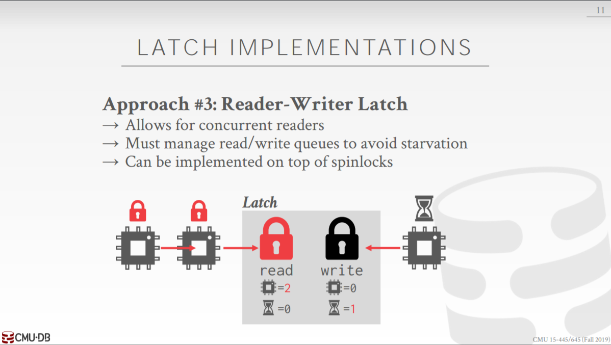
Hash Table Latching
接下来介绍哈希表中Latch的使用.
静态哈希表
在使用哈希表建立索引时，访问数据的方法非常少，拿最常用的线性探查法进行举例，由于所有的线程都是按照page0, page1, page2…的顺序对哈希表进行探查，那么就不可能有两个线程拥有互斥的latch, 即不可能发生死锁
动态哈希表
动态哈希表中的情况略微复杂一些，因为有更多共享区域需要更新，但是总体来说也比较简单
锁的粒度
哈希表中，Latch通常可以取两种粒度
Page Latch
在每个Page中安置一个Latch, 当线程访问该page时需要获取该锁
Slot Latch
在page的每个slot中安置一个Latch, 当线程访问该slot时获取该锁
B+ Tree Latching
在B+树，一种常见的B+树并行访问技术被称为蟹行协议(crabbing protocol),下面是该协议的具体流程
搜索
- 首先在根节点处加上Read Latch
- 沿着树向下遍历，首先在孩子节点上获得Read Latch, 然后释放掉在父节点上的锁，重复这个过程直到它到达一个叶节点
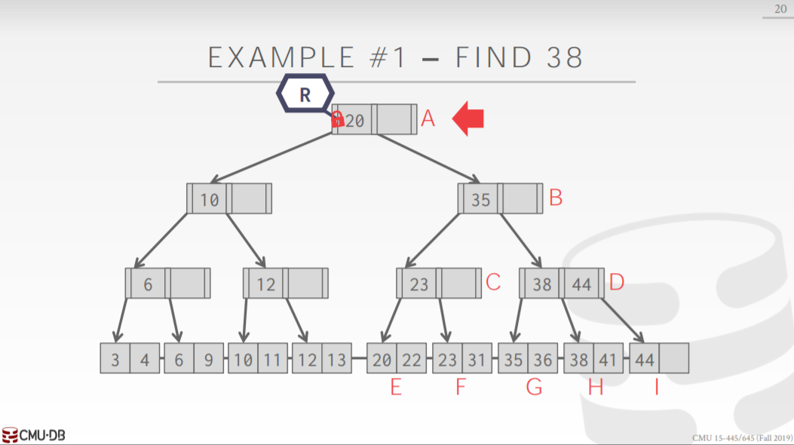
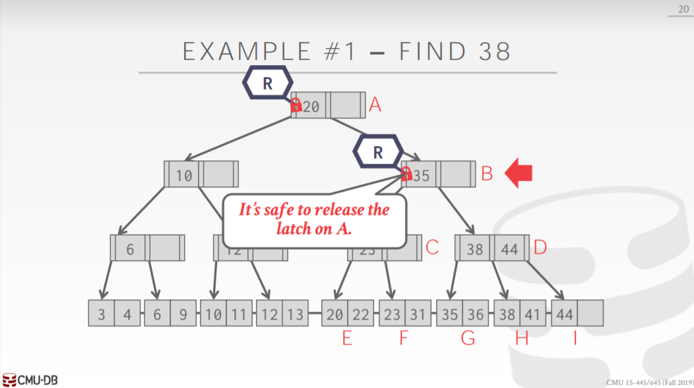
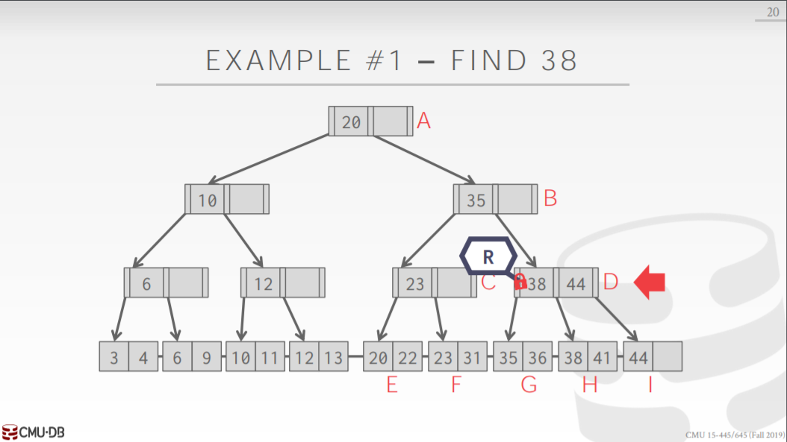
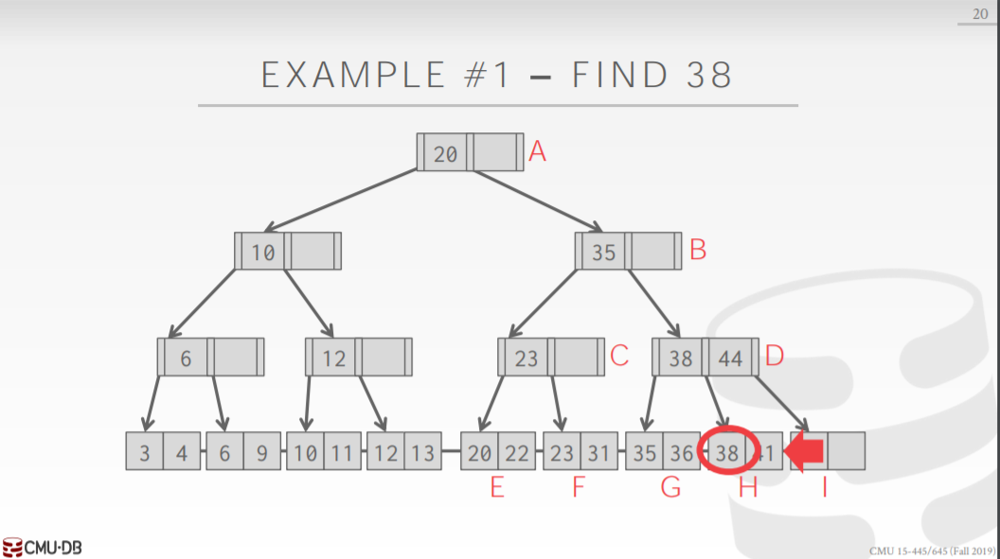
插入或删除
- 在根节点上加上Write Latch
- 沿着根节点向下，对子节点加Write Latch, 紧接着判断该子节点是否安全
安全在插入和删除下有着不同的语义：
插入
当节点再插入一个pair不会发生分裂，即表明该节点安全
删除
当节点删除一个pair后不会和兄弟节点发生合并或者重新分配，即表明该节点安全
如果子节点安全，那么释放当前当前所处节点的所有父亲节点上面的锁
如果子节点不安全，则继续保持Write Latch状态
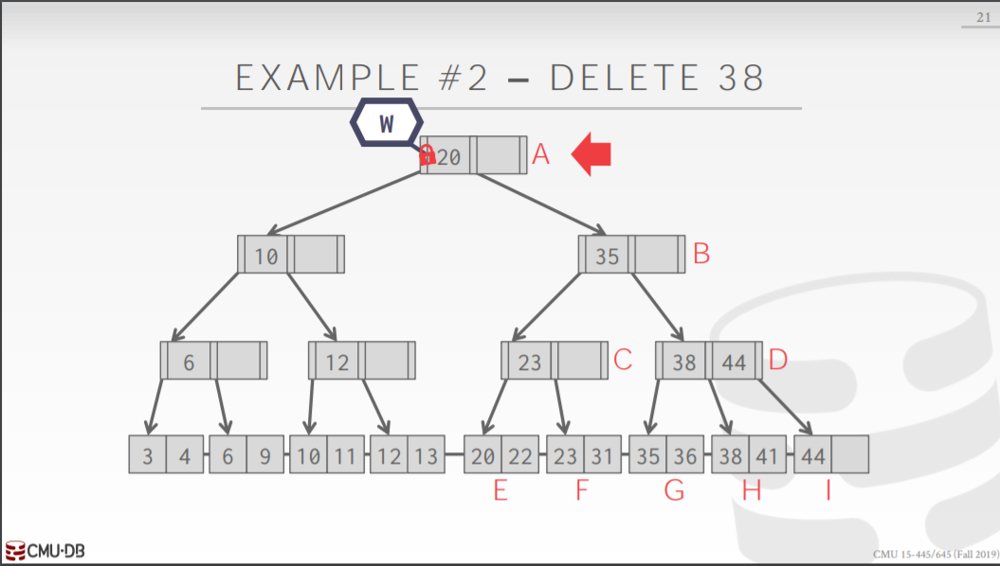
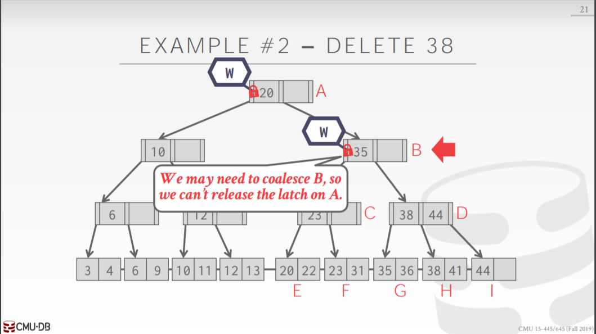
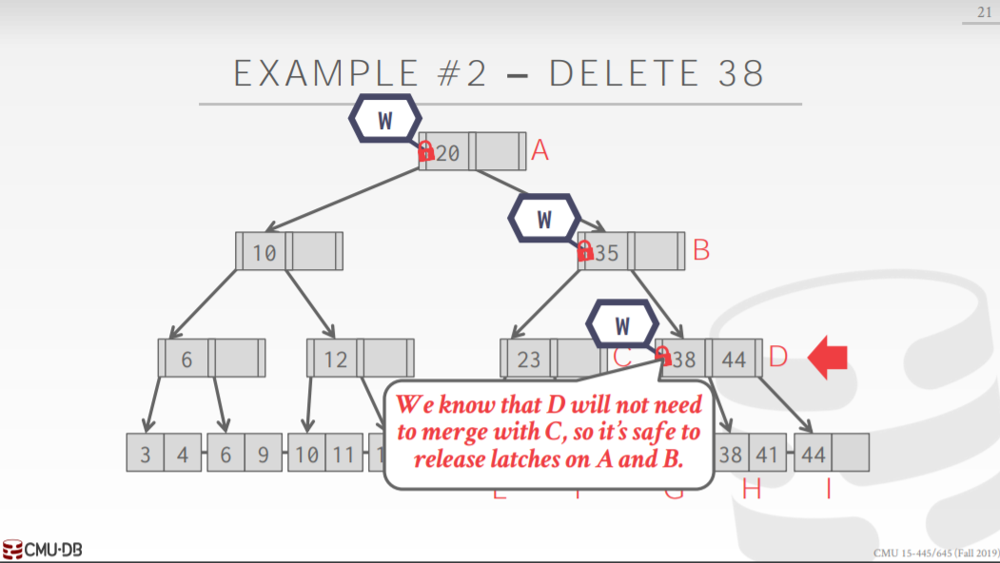
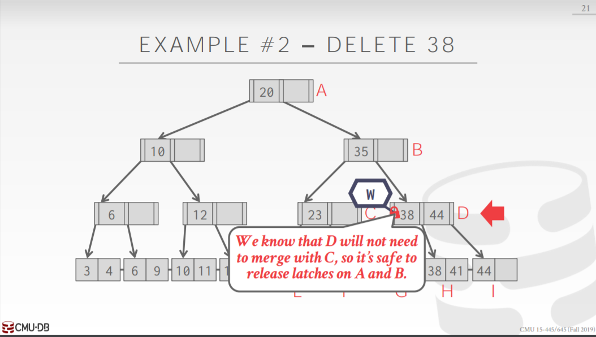
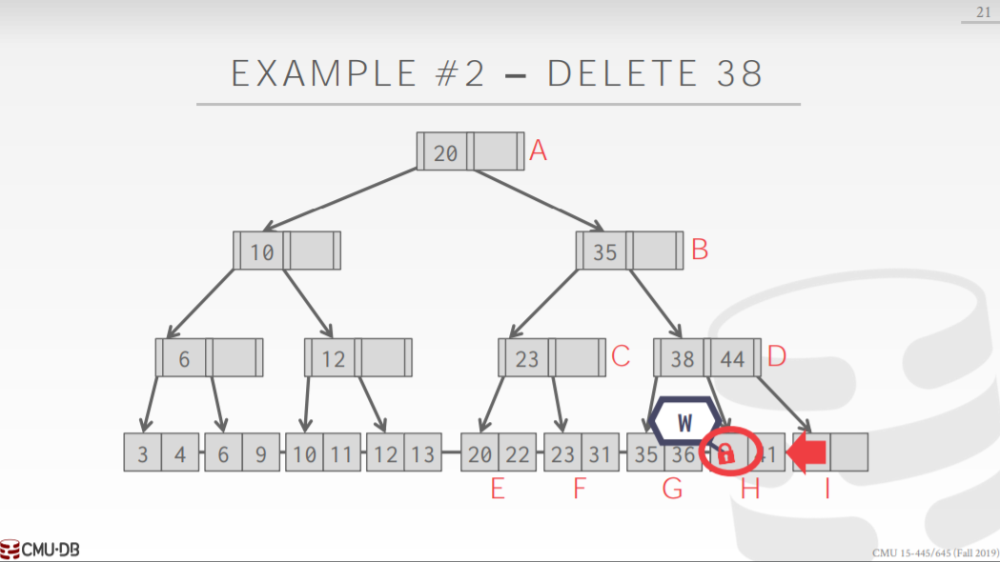
Improved Lock Crabbing Protocal
这里有一种对Crabbing Protocal方法的改进算法，该算法的基本思想是假设接下来的操作不会触发节点合并，重新分配，分裂等操作，从根节点开始一直向下都采用和Crabbing Protocal中的Search操作一样的流程，即只加Read Latch，在叶子节点上设置Write Lathch, 等到触发合并、重新分配，或者分裂操作的时候，再从根节点开始重新应用Crabbing Protocal
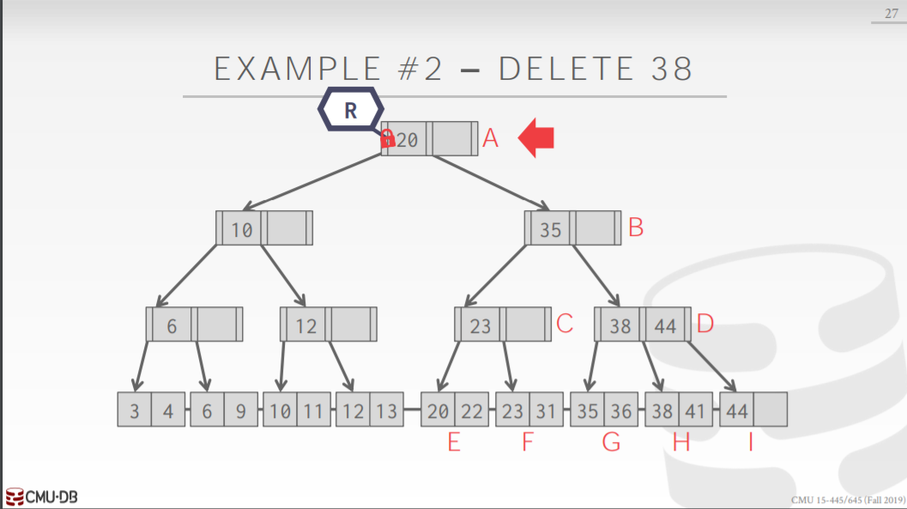
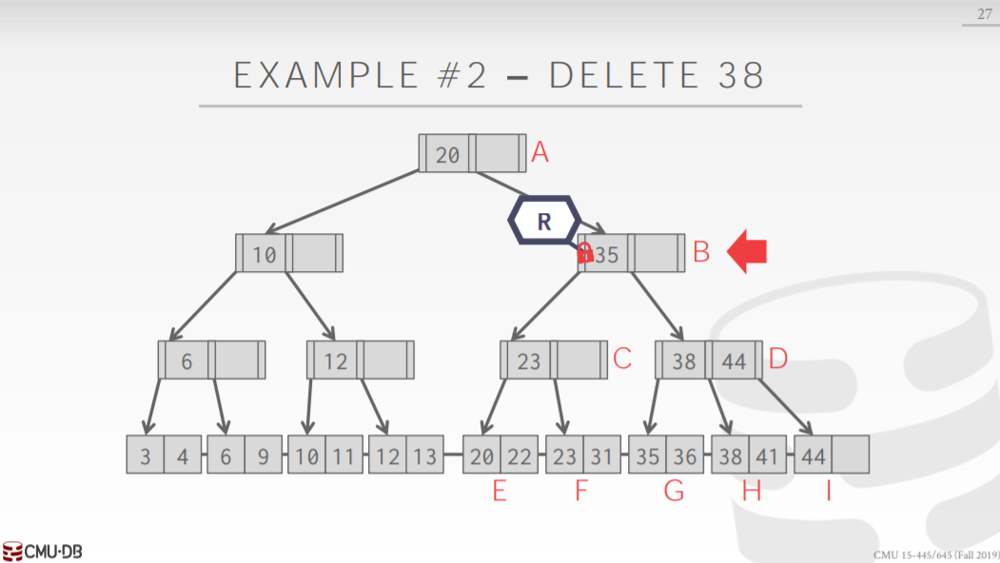
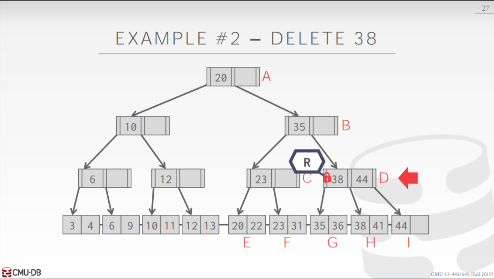
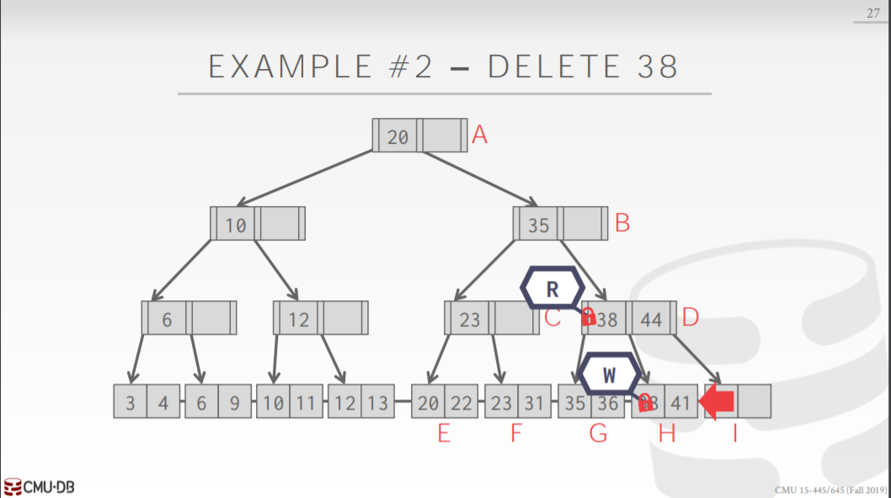
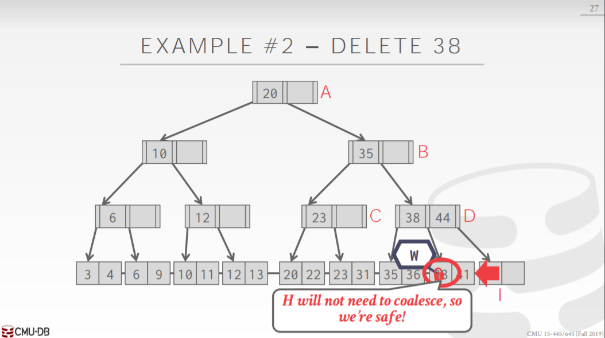
B+树中的死锁
在叶子节点单向连接的情况下，对B+树进行并发访问是不会发生死锁的，因为对单向B+树进行访问总共只有两种方式
从根节点自上而下进行访问
由于所有线程都是自上而下进行访问的，所以如果一个线程尝试获取一个latch，但是该latch正在被占有，那么线程只需要简单等待其他线程释放latch就可以，不会发生死锁
沿着叶子节点单向访问
同理，由于访问方向相同，所以不会发生死锁
但是，如果叶子节点是双向连接，那么就可能发生死锁
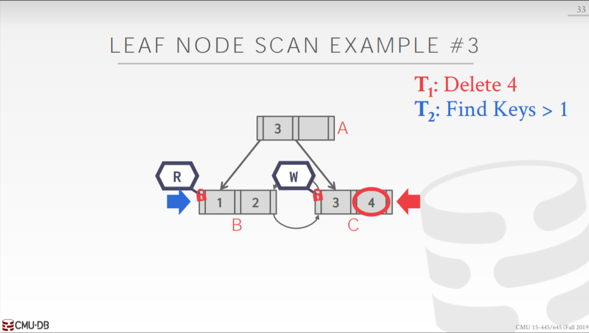
此时，一方必须选择放弃它当前的操作，从头访问，以打破死锁
本博客所有文章除特别声明外，均采用 CC BY-SA 4.0 协议 ，转载请注明出处！